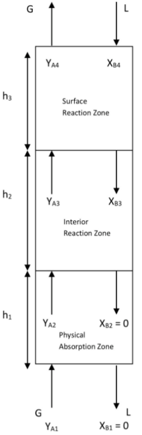
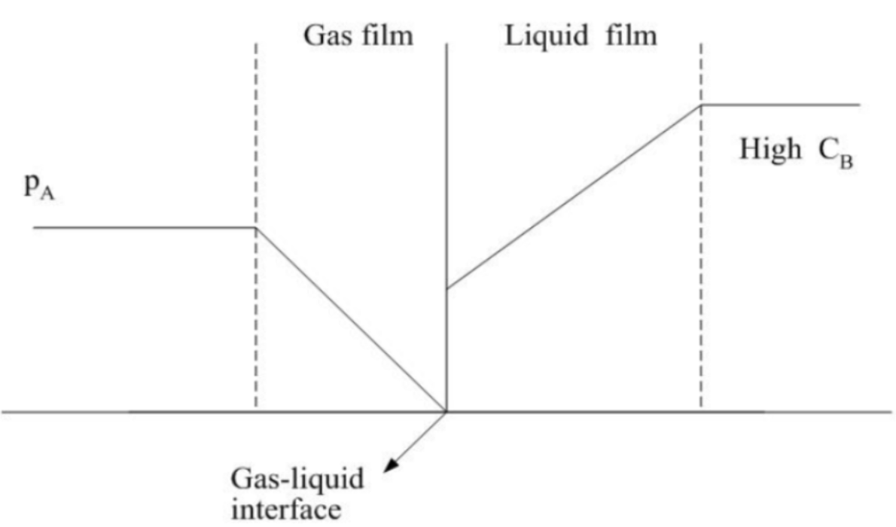
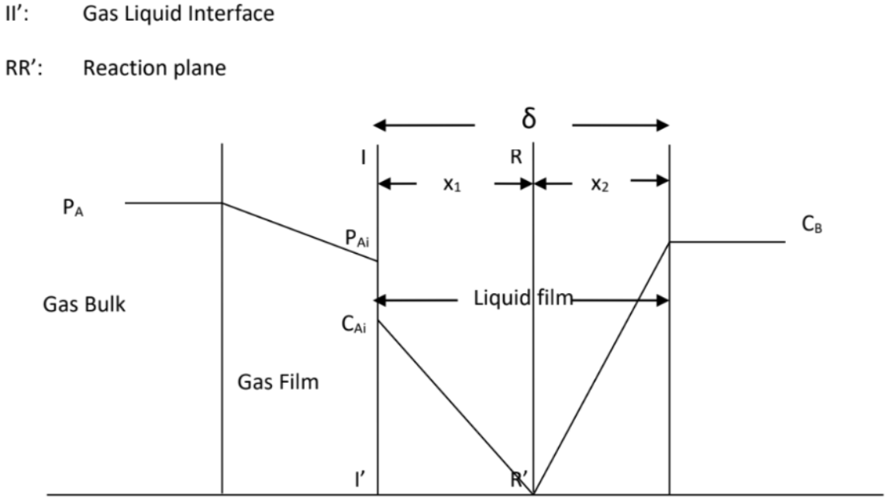
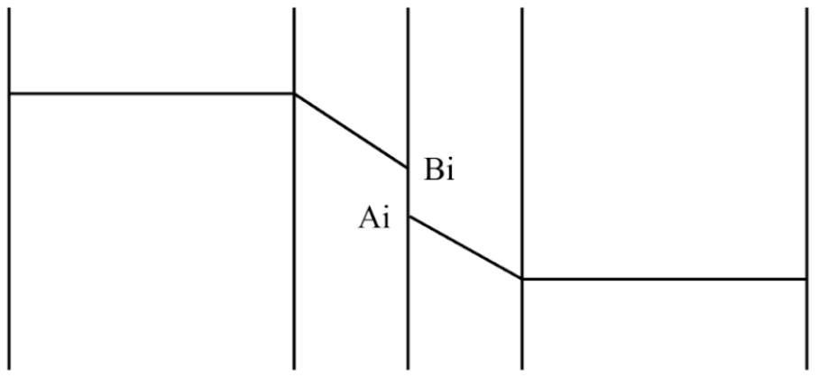

Supplementary Information
The following illustrations are a microscale representation of the gas and liquid in contact.


SRZ occurs at the top of the tower nearest to the liquid inlet where the concentration of NaOH absorbent is highest. During this phase, the reaction between CO2 and NaOH occurs extremely fast, often occurring as soon as CO2 overcomes mass transfer resistance and dissolves into the liquid film due to the high concentration gradient offered by NaOH. As such, SRZ is formed because the rate of reaction is significantly faster than the mass transfer of CO2 away from the interface, leading to immediate consumption near the surface as illustrated in Figure 2.

IRZ typically occurs in the middle of the tower below the SRZ section, where reaction moves away from the interface into the bulk liquid as well. This is because the concentration of NaOH absorbent decreases due to prior consumption, hence the reaction is slightly slower than in PAZ due to the lower NaOH concentration gradient. As such, the rate of reaction is only slightly faster or even comparable to the rate of CO2 mass transfer, allowing the CO2 to penetrate slightly deeper into the liquid bulk before being fully consumed as illustrated in Figure 3.

Lastly, at the bottom of the column where the PAZ resides, the concentration of NaOH absorbent is fully depleted due to significant prior consumption. In this region, mass transfer of CO2 outpaces negligible reaction locally, resulting in the regime to be dominated by physical absorption without any chemical reaction interference as illustrated in Figure 4.
These interactions between the different zones introduces significant complexity in predicting system behaviour as limited physical understanding of the system exists to date, especially under transient unsteady-state operating conditions. Consequently, there is a strong need for modelling approaches capable of reliably capturing such complex dynamic behaviour.
| Step | Procedure |
|---|---|
| 1 | Prepare 25L of 0.25 mol/L NaOH solution in a 25L measuring jug. |
| 2 | Mix thoroughly with a hand-held stirrer for 1 minute. |
| 3 | Pour the prepared NaOH solution into the feed tank labelled as NaOH Feed Tank. |
| Step | Procedure |
|---|---|
| 1 | Set deionised water flowrate to 0.7 L/min and the air flow rate to inlet to be 2.20 L/min. Allow for the system to run until steady state which takes 20 minutes. |
| 2 |
(This serves as the time = 0)
|
| 3 | Switch the CO2 gas pump on and set the CO2 gas flow rate to inlet to be 0.18L/min and the air flow rate to inlet to be 2.02 L/min to form a CO2 gas mixture. |
| 4 | Set the deionised water flowrate to be 0.60 L/min and the NaOH Feed Tank flowrate to be 0.10 L/min. |
| 5 | Start the stopwatch immediately after step 3 and 4. |
| 6 |
(This serves as time = 4, 8, 12 and 16)
|
| 7 | At the end of 16 minutes, there will be a total of 5 average data points (with triplicates) for the gas outlet and liquid outlet, CO2 and NaOH concentrations respectively. |
| 8 | Afterwards, collect 1 cm3 of the CO2 gas mixture at the gas inlet using a gas syringe and test the sample using Gas Chromatography (GC). Repeat this step twice. Calculate the average CO2 gas mixture concentration using the 2 repeated values in step 7 and this will be the CO2 inlet concentration, YA1 for the particular run. |
| 9 | Repeat step 1 with the previous operating parameters and step 3 and 4 with the subsequent operating parameters. |
| Surface Reaction Zone |
|---|
|
In this segment \(X_{Bi}\) or \(C_{Bi} > 0\), and \(p_{Ai}\) or \(Y_{Ai} = 0\).
Mass transfer rate:
\[-r_A = k_{gA}(p_A - p_{Ai}) = k_{gA}p_{\mathrm{inert}}(Y_A - Y_{Ai}) = k_{gA}p_A = k_{gA}p_{\mathrm{inert}}Y_A = \frac{k_{gA}p_TY_A}{1 + Y_A}\]
Using the plug flow design equation:
\[h = \frac{G}{a}\int_{Y_{A0}}^{Y_A} \frac{(1+Y_A)\,dY_A}{Y_A} = \frac{G}{k_{gA}ap_T}\left[\ln\left(\frac{Y_{A3}}{Y_{A4}}\right) + (Y_{A3} - Y_{A4})\right]\]
For a dilute solution where \(Y_A \ll 1\), hence
\[h_3 = \frac{G}{k_{gA}ap_T}\ln\left(\frac{Y_{A3}}{Y_{A4}}\right)\]
|
| Interior Reaction Zone |
|---|
|
The end of the surface reaction zone and the beginning of the interior reaction zone occur when the concentration of both reactants are zero at the interface, where
\[p_{Ai} = C_{Ai} = Y_{Ai} = C_{Bi} = X_{Bi} = 0\]
To calculate \(X_{B3}\),
\[k_{gA}(p_A-p_{Ai}) = k_{gA}p_TY_{A3} = \frac{k_{LB}(C_{B3}-C_{Bi})}{b} = \frac{k_{LB}C_TX_{B3}}{b}\]
\[\text{From } k^{0}_{LA}=\frac{D_A}{\delta} \text{ and } k_{LB}=\frac{D_B}{\delta}\]
\[k_{gA}p_TY_{A3} = \frac{C_TD_BX_{B3}}{\delta b} = \frac{k^{0}_{LA}C_TD_BX_{B3}}{D_A b}\]
\[X_{B3} = \frac{k_{gA}D_Ap_Tb\,Y_{A3}}{k^{0}_{LA}C_TD_B}\]
Material balance over entire surface reaction zone
\[G(Y_{A3}-Y_{A4}) = \frac{L(X_{B4}-X_{B3})}{b}\]
\[Y_{A3} = Y_{A4} + \frac{L}{bG}(X_{B4}-X_{B3})\]
\[X_{B3} = \frac{k_{gA}D_Ap_Tb}{k^{0}_{LA}C_TD_B}\left[Y_{A4}+\frac{L}{bG}(X_{B4}-X_{B3})\right]\]
\[\text{Let }\beta_1=\frac{Lk_{gA}D_Ap_T}{GC_TD_Bk^{0}_{LA}}\text{ and }\beta_2=\frac{LbD_Ap_T}{C_TD_Bk^{0}_{LA}}\]
\[X_{B3}=\frac{\beta_1X_{B4}+\beta_2Y_{A4}}{1+\beta_1}\]
Mass transfer of CO\(_2\) from gas bulk to interface: \(-r_A = k_{gA}(P_A-P_{Ai})\)
Mass transfer of CO\(_2\) from interface to reaction plane: \(-r_A = \frac{D_A(C_{Ai}-0)}{x_1}\)
Mass transfer of NaOH from liquid bulk to reaction plane: \(-r_B = \frac{D_B(C_B-0)}{x_2}\)
At steady state,
\[-r_A = \frac{-r_B}{b} = k_{gA}(P_A-P_{Ai}) = \frac{D_AC_{Ai}}{x_1} = \frac{D_BC_B}{bx_2}\]
\[-r_Ax_1 = D_AC_{Ai} \quad \text{and} \quad -r_Ax_2 = \frac{D_BC_B}{b}\]
\[-r_A(x_1+x_2) = -r_A\delta = D_AC_{Ai}+\frac{D_BC_B}{b}\]
For dilute solution, Henry's law is applied \(p_{Ai}=H_AC_{Ai}\),
\[-r_A\delta = \frac{D_Ap_{Ai}}{H_A}+\frac{D_BC_B}{b}\]
since \(p_A = \frac{-r_A}{k_{gA}}\)
\[-r_A\left[1+\frac{D_A}{H_Ak_{gA}\delta}\right]=\frac{D_Ap_A}{H_A\delta}+\frac{D_BC_B}{b\delta}\]
\[-r_A=\left[\frac{H_Ak_{gA}\delta}{D_A+H_Ak_{gA}\delta}\right]\left[\frac{D_Ap_A}{H_A\delta}+\frac{D_BC_B}{b\delta}\right]\]
By dividing numerator and denominator by \(\frac{1}{D_AH_Ak_{gA}}\), we have
\[-r_A=\frac{p_T\left(\frac{Y_A}{1+Y_A}\right)+\frac{D_BH_AC_T}{D_Ab}\left(\frac{X_B}{1+X_A}\right)}{\frac{H_A}{k^{0}_{LA}}+\frac{1}{k_{gA}}}\]
Given that for a dilute solution, \(p_A=p_TY_A\) and \(C_B=C_TX_B\)
\[-r_A=\frac{p_TY_A+\frac{D_BH_AC_TX_B}{D_Ab}}{\frac{H_A}{k^{0}_{LA}}+\frac{1}{k_{gA}}}=K^{0}_{GA}\left[p_TY_A+\frac{D_BH_AC_TX_B}{D_Ab}\right]\]
\[\text{where }\frac{1}{K^{0}_{GA}}=\frac{1}{k_{gA}}+\frac{H_A}{k^{0}_{LA}}=\frac{1}{k_{gA}}+\frac{mp_T}{k^{0}_{LA}C_T}\]
Using Henry's law,
\[p_{Ai}=H_AC_{Ai} \quad \text{or} \quad Y_{Ai}p_T=H_AC_TX_{Ai}\]
\[Y_{Ai}=\frac{H_AC_TX_{Ai}}{p_T}=mX_{Ai}\]
Using the plug flow design equation
\[h_2=\frac{G}{a}\int_{Y_{A3}}^{Y_{A2}}\frac{dY_A}{-r_{As}}=\frac{G}{K^{0}_{GA}ap_T}\int_{Y_{A3}}^{Y_{A2}}\frac{dY_A}{\left[Y_A+\frac{D_BmX_B}{D_Ab}\right]}\]
\(X_B\) is determined by material balance,
\[X_B=X_{B3}-\frac{bG}{L}(Y_A-Y_{A3})\]
Substituting \(X_B\) into the equation above,
\[h_2=\frac{G}{K^{0}_{GA}ap_T}\int_{Y_{A3}}^{Y_{A2}}\frac{dY_A}{\alpha Y_A+\beta}=\frac{G}{K^{0}_{GA}ap_T\alpha}\ln\left[\frac{\alpha Y_{A2}+\beta}{\alpha Y_{A3}+\beta}\right]\]
\[\text{where }\alpha=1-\frac{D_BmG}{D_AL}\text{ and }\beta=\frac{D_BmX_{B3}}{D_Ab}+\frac{D_BmGY_{A3}}{D_AL}\]
\(Y_{A2}\) is obtained similarly by material balance
\[Y_{A2}=Y_{A4}+\frac{L}{bG}X_{B4}\]
|
| Physical-Reaction Zone |
|---|
|
For dilute solution,
\[h_1 = \frac{G}{K^{0}_{GA}\,a\,p_T\left(1-\frac{mG}{L}\right)}\ln\left[\left(1-\frac{mG}{L}\right)\left(\frac{Y_{A1}}{Y_{A2}}\right)+\frac{mG}{L}\right]\]
\[\text{where }\frac{1}{K^{0}_{GA}a}=\frac{1}{k_{gA}a}+\frac{mp_T}{k^{0}_{LA}aC_T}\quad\text{and}\quad m=\frac{y_A}{x_A}=\frac{H_AC_T}{p_T}\]
|